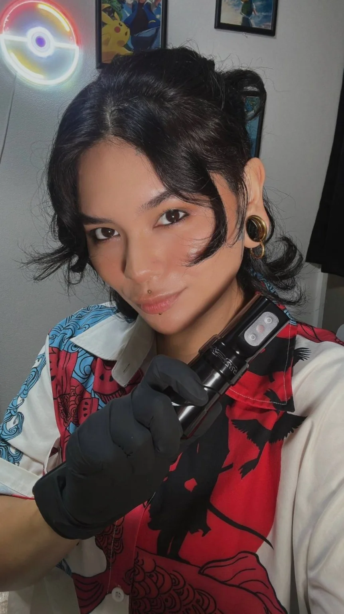

ECHIZEN · FUKUI · JAPAN
Saittoo.ink
FINE LINE ✦ BLACKWORK
Arte que conta histórias. Traços que permanecem.
EXPLORAR PORTFÓLIO
01 / SELECTED WORKS
Arte na pele
Uma seleção de tatuagens realizadas por Camila Saito.

02 / THE ARTIST
Camila Saito
Tatuadora em Echizen, Fukui, Japão. Seu trabalho explora a delicadeza do Fine Line e a força expressiva do Blackwork, criando tatuagens com personalidade.
@saittoo.ink ↗Sua próxima história começa aqui.
Orçamentos e agendamentos pelo Instagram.
ENTRAR EM CONTATO